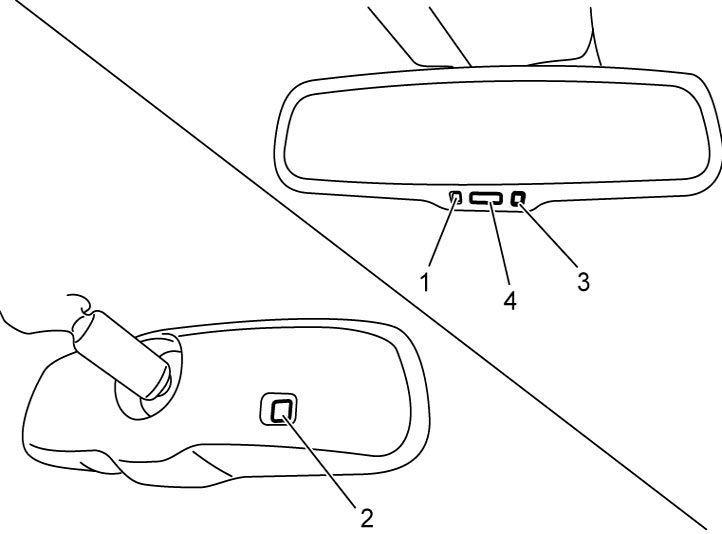

9E
| Inner Rear View Mirror (With Auto Dimming) On-Vehicle Inspection |
1)Set ignition “ON” and check if indicator (1) lights in green.
2)Cover light sensor (2) at the back of inner rear view mirror and light up light sensor (3) on mirror side to check if color of inner rear view mirror changes.
3)Under the above condition, place shift lever in “Reverse” (M/T model) or select lever in “R” (A/T model) and check if color of inner rear view mirror returns to initial color.
4)Cover the front light sensor (2) and apply light to the rear light sensor (3) to check if color of inner rear view mirror changes.
5)Under the same condition as Step 4), press button (4) and check if the color of inner rear view mirror returns to initial color.
6)Replace inner rear view mirror if color does not change.


 "Expand image")